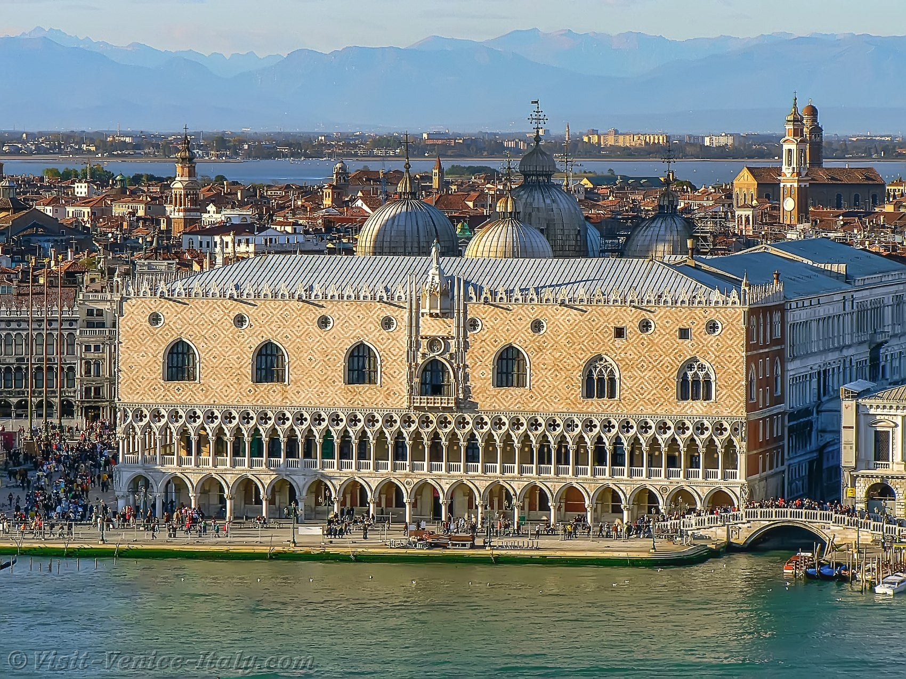

Doge's Palace

The Doge's Palace, or Palazzo Ducale, stands as a testament to Venice's political power and artistic
achievements. Built in the Venetian Gothic style, the palace served as the residence of the Doge, the supreme
authority of the Venetian Republic, and the seat of government. Its impressive façade, adorned with delicate tracery
and marble columns, overlooks the Piazzetta and the lagoon, symbolizing the grandeur of the Venetian state.
Inside the Doge's Palace, visitors can explore the grand halls and chambers where the governing bodies of the
republic conducted their affairs. The Sala del Maggior Consiglio, the Great Council Hall, is particularly noteworthy
for its sheer size and magnificent decorations. The hall's walls are adorned with vast frescoes by renowned artists
such as Tintoretto and Veronese, depicting scenes from Venetian history and mythology.
One of the palace's most famous features is the Bridge of Sighs, which connects the Doge's Palace to the adjacent
prison, the Prigioni Nuove. This enclosed bridge, with its small windows offering glimpses of the outside world,
earned its name from the sighs of prisoners who crossed it, seeing Venice for the last time before their
imprisonment. The bridge has since become a romantic symbol and a popular attraction for visitors.
The Doge's Palace also houses the armory, a collection of weapons and armor that showcases the military might of the
Venetian Republic. The armory contains a wide array of items, from swords and crossbows to suits of armor and
firearms, offering a glimpse into the technological advancements and craftsmanship of the time. The collection is a
testament to Venice's strategic importance and its efforts to defend its maritime empire.
In addition to its historical and architectural significance, the Doge's Palace is also a cultural treasure trove,
with its halls and chambers filled with works of art. The palace's lavish decorations, intricate carvings, and
frescoed ceilings reflect the artistic prowess of the Venetian masters. The Doge's Palace remains a symbol of
Venice's rich heritage and continues to captivate visitors with its timeless beauty and historical significance.